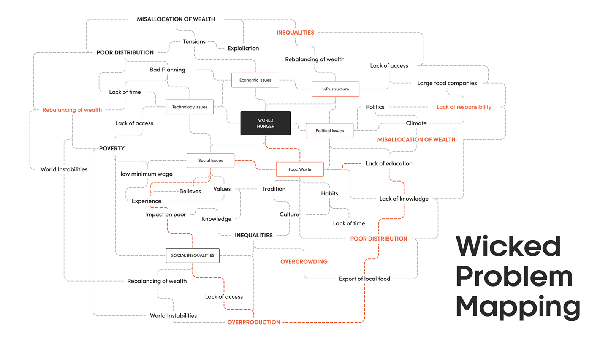

On this page
Often in Design Thinking, we are meet with the term, Wicked Problem. A wicked problem is a problem that is difficult or impossible to solve because of incomplete, contradictory, and changing requirements that are often difficult to recognise. It is a systemic problem. The effort to solve one aspect of it may reveal or create others. Design Thinking was born out of a desire to solve these types of impossible challenges.
If you happen to be dealing with a wicked problem for your case study, your empathy phase will be of particular value because of the size and extent of the issue to hand.


Including but not limited to:
- Global Warming
- Deforestation
- Burning Fossil Fuels
- Biodiversity Loss
- Species Extinction
- Marine Ecosystem Deterioration
- Forced Migration
- Refugee Crises
- Wealth Inequality
- Famine
- Pandemics
- Energy Insecurity
- War
It refers to an idea that cannot be fixed and where there is no single solution to the problem. It has no determinable stopping point. Moreover, often because of complex inter-dependencies. Like the tourism industry in Spain. Without tourists, Spain would run a deficit GDP but with tourism comes suffering for local communities and environmental suffering.

Wicked Problem mapping is an experimental research method created by a former student, who when investigating causes for world hunger. Using the 5 why’s template, Aga applied her findings into a non linear reason map of causality creating this insightful expression of the problem space .
So above is a summary of the five factors which comprise a wicked problem.
- Operationally complex
- Lacks singular clear solution
- Unforeseen outcomes
- Involves behavioural change
- Multi faceted and Interdependent
Summary
A wicked problem is a systemic problem. The effort to solve one aspect of it may reveal or create others.
Wicked problems often include issues like, coronavirus, the obesity epidemic, plastic production and all aforementioned issues. We can never ever solve systemic problems but we can make a small impact through creative solutions. These small solutions make a small difference. In essence we chip away at a tiny little part of the problem and our small difference can go a long way! As we say, if humanities's ingenuity managed to get us into a mess, perhaps humanities's ingenuity may help us get out of it.
If dealing with a wicked problem for your case study, it is important at as early a stage a possible that you focus in a little more specifically into the area under investigation. Your discovery process will be dedicated in large part to understanding the user needs and market needs from there.
It is important recognise that we never actually solve wicked problems but rather put a little dent in the issue and help a little bit.